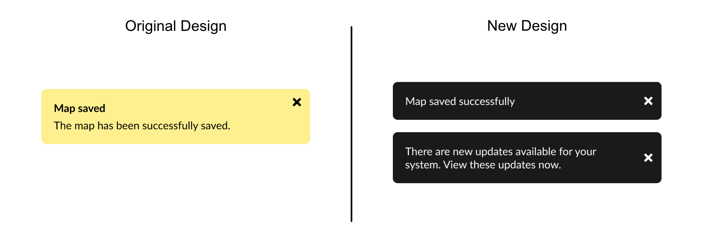

ExtraHop Networks, 2023
ExtraHop is a cybersecurity tool that users access through their browser. The system not only visualizes data, but allows users to make a number of configurations and changes from within the user interface.
Many years ago, when ExtraHop was a young start up, somebody added toast notifications in the system. While the intention was in the right place, the implementation was poor at best.
One issue was that the toast notifications were ALWAYS YELLOW! No matter if the message was conveying a success, error, or warning, the toast notification always appeared in yellow. Additionally, the behavior of the notifications was inconsistent and could sometimes result in a chain of toast notifications covering the screen.
Something had to be done!
By reviewing known best practices around toast notifications, ExtraHop’s UI can do a better job of communicating information to users. A more familiar and predictable interface will allow users to user the product with ease and confidence.
To begin this design process, I started by researching industry standards for implementing toast notifications. I spent time reviewing the design guidelines for Google’s material.io, Hewlett Packard, and Adobe. From these resources, I gathered the following general guidelines:
Sources: Hewlett Packard Enterprise, Material Design (Google), Adobe, Salesforce
After gathering a few general guidelines, I reviewed our product’s implementation. I also took time to review defect and support tickets that had been filed over the years related to toast notifications. In many ways, our product broke many of the guidelines that I had previously researched.
One issue that spanned all of our toast notifications was that there was a
Another pitfall of existing design was Notification Waterfalls. Having an expiry time for notifications was optional, so there were a number of cases where the notifications would live longer than the recommended 8 seconds. Additionally, new notifications did not dismiss those before them, leading to a cascading list of toast notifications that would completely fill the right side of the screen.
The next step in the process was to reimagine what toast notifications should look like in our new system. One of the elements I wanted to analyze was the toast notification’s placement within the browser. Traditionally, ExtraHop’s toast notifications were placed in the upper-right corner. However, after reviewing designs from HPE, I wanted to evaluate placing them in the center of the page.
Placing the notification in the middle of the viewport offers a number of advantages over the current placement. For one, there was only one page with centered interactive elements, reducing the risk of overlapping content. Additionally, a notification placed in the center might more easily catch the user’s eye. There were some downsides, such as the limited horizontal space that wouldn’t allow long text to work as well in this space.
Keeping the toast notifications on the right side had benefits such as predictability for existing users, and less work to make existing pages more compatible. However, this placement requires hovering the notification over content below, which could obscure other page elements temporarily.
After deciding that center placement would work better with most of the UI's pages I spent some time completing wireframes of the new design. I wanted to elaborate on the edge cases of this design where there were buttons or exceptionally long text strings. I completed this wireframing exercise on our various page layouts to get a full understanding of all the changes.
"I really like the way this looks" - User
After completing my research and low-fidelity designs, I presented the findings to the UX team. In our discussion, we reviewed our past implementations and where we didn’t align with industry best practices. We also discussed the pros and cons of the placement options, and started to expand upon what else we could do with toast notifications. For example, what would this new element look like if there were buttons, or if we decided to include a status icon?
The final implementation featured a number of changes to bring ExtraHop’s toast notifications up to standard.
Here are more details about the final design elements:
Toast notifications now feature a single text body; gone are the redundant headers. Working with our technical writers, we reduced the number of words used in these messages. There are of course rare cases where the text may need to span more than one line.
The new design moves away from the repulsive sunshine-yellow and instead sets the color of the toast notification to match the system's theme.
Finally, the code was updated to have a hard limit of 8 seconds per toast notification. Working with our Technical Writers, we created a standard not only for how text should read in toast notifications, but how long notifications should last. For example, simple one-word confirmations like “Saved” or “Deleted” only needed to be around for 4 seconds. A more complex error should remain until the 8 second limit.
Due to limited front end developers, I actually did the coding to make these changes! The work was split across two merge requests (MRs). The first dealt with changing the design elements of toast notification. I implemented the color changes and added the maximum timeout for all notifications.
The second MR was more tedious. It involved me reviewing every case where we had implemented in the past. I worked with a technical writer to fit all of these messages to our new wording framework so that they matched our new, simpler style guide.
lines of code changed
With some of the full design elements shelved, I hope to be able to further enhance toast notifications by adding additional information like status, actions, and more!